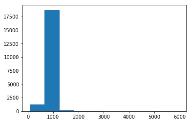
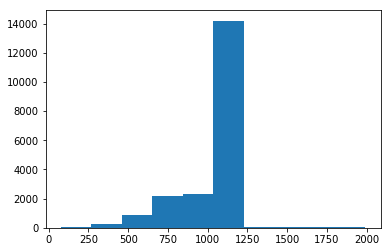
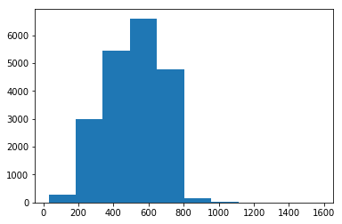
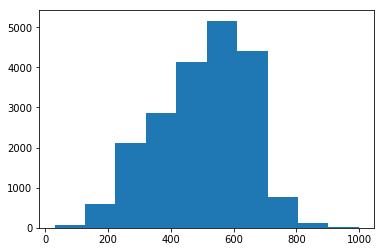

Let's try testing out the 'standard' routine for setting up an image Neural Net following lesson 3 from the fastai DL1 course.
%reload_ext autoreload
%autoreload 2
%matplotlib inline
from fastai.imports import *
from fastai.torch_imports import *
from fastai.transforms import *
from fastai.conv_learner import *
from fastai.model import *
from fastai.dataset import *
from fastai.sgdr import *
from fastai.plots import *
/home/paperspace/anaconda3/envs/fastai/lib/python3.6/site-packages/sklearn/ensemble/weight_boosting.py:29: DeprecationWarning: numpy.core.umath_tests is an internal NumPy module and should not be imported. It will be removed in a future NumPy release.
from numpy.core.umath_tests import inner1d
torch.cuda.set_device(0)
PATH = "data/humpback-whale/"
sz = 224
arch = resnext101_64
bs = 58
NOTE: Here we're taking a random 20% of the data for the validation set. This is different from when we looked at structured data. Is this sample a 'good' validation set, i.e. is it a good representation of the test set? Also, is this too much/too little?
label_csv = f'{PATH}train.csv'
n = len(list(open(label_csv))) - 1 # header is not counted (-1)
val_idxs = get_cv_idxs(n) # random 20% data for validation set
n
25361
label_df = pd.read_csv(label_csv)
label_df.head()
| Image | Id | |
|---|---|---|
| 0 | 0000e88ab.jpg | w_f48451c |
| 1 | 0001f9222.jpg | w_c3d896a |
| 2 | 00029d126.jpg | w_20df2c5 |
| 3 | 00050a15a.jpg | new_whale |
| 4 | 0005c1ef8.jpg | new_whale |
label_df.pivot_table(index="Id", aggfunc=len).sort_values('Image', ascending=False)
| Image | |
|---|---|
| Id | |
| new_whale | 9664 |
| w_23a388d | 73 |
| w_9b5109b | 65 |
| w_9c506f6 | 62 |
| w_0369a5c | 61 |
| w_700ebb4 | 57 |
| w_3de579a | 54 |
| w_564a34b | 51 |
| w_fd3e556 | 50 |
| w_88e4537 | 49 |
| w_2b069ba | 48 |
| w_d405854 | 47 |
| w_789c969 | 45 |
| w_f0fe284 | 45 |
| w_5e8e218 | 40 |
| w_778e474 | 40 |
| w_343f088 | 40 |
| w_5a2634c | 37 |
| w_a9304b9 | 37 |
| w_60ce6fc | 37 |
| w_6822dbc | 36 |
| w_af367c3 | 35 |
| w_1ca9ab1 | 34 |
| w_f765256 | 34 |
| w_17b0d3a | 33 |
| w_d72771c | 32 |
| w_8c25681 | 31 |
| w_08630fd | 31 |
| w_6cda039 | 31 |
| w_51fc1fc | 30 |
| ... | ... |
| w_ad01432 | 1 |
| w_491bdcb | 1 |
| w_ad2bb89 | 1 |
| w_48cc590 | 1 |
| w_4982a49 | 1 |
| w_ad6df15 | 1 |
| w_ad7b758 | 1 |
| w_ad880b8 | 1 |
| w_48b6083 | 1 |
| w_48b1730 | 1 |
| w_adcaf2a | 1 |
| w_497efb9 | 1 |
| w_49ae16f | 1 |
| w_abd9d0b | 1 |
| w_4a1b777 | 1 |
| w_abeab1e | 1 |
| w_abee142 | 1 |
| w_4ac8e76 | 1 |
| w_4ab6b16 | 1 |
| w_4a8467f | 1 |
| w_ac26398 | 1 |
| w_ac608c7 | 1 |
| w_49cd60d | 1 |
| w_ac6aee2 | 1 |
| w_ac73445 | 1 |
| w_49ee8e0 | 1 |
| w_49e0d44 | 1 |
| w_49d1bcd | 1 |
| w_49ce813 | 1 |
| w_ffe8693 | 1 |
5005 rows × 1 columns
Apparently there is a 'new whale' distinction. In order to have a proper validation set, we'll want a similar fraction of new whales as is in the test set. Also it appears as though a significant portion of these whales have very few examples. Looking at the distribution of images kernal on kaggle we see that almost 30% have 4 images or less while 30% have between 5-73 images.
Let's now enhance our data set with some data augmentation.
tfms = tfms_from_model(arch, sz, aug_tfms=transforms_side_on, max_zoom=1.1)
data = ImageClassifierData.from_csv(PATH, 'train', f'{PATH}train.csv', test_name='test', # we need to specify where the test set is if you want to submit to Kaggle competitions
val_idxs=val_idxs, suffix='', tfms=tfms, bs=bs)
fn = PATH + data.trn_ds.fnames[1]; fn
'data/humpback-whale/train/0001f9222.jpg'
img = PIL.Image.open(fn); img
img.size
(1050, 700)
This is a large img. Let's check the dataset to see the typical img size.
size_d = {k:PIL.Image.open(PATH + k).size for k in data.trn_ds.fnames}
row_sz, col_sz = list(zip(*size_d.values()))
row_sz = np.array(row_sz); col_sz = np.array(col_sz)
plt.hist(row_sz)
(array([ 1276., 18677., 181., 49., 59., 18., 9., 4., 2., 14.]),
array([ 77. , 665.2, 1253.4, 1841.6, 2429.8, 3018. , 3606.2, 4194.4, 4782.6, 5370.8, 5959. ]),
<a list of 10 Patch objects>)

plt.hist(row_sz[row_sz<2000])
(array([ 51., 279., 889., 2197., 2330., 14203., 47., 36., 25., 86.]),
array([ 77. , 268.4, 459.8, 651.2, 842.6, 1034. , 1225.4, 1416.8, 1608.2, 1799.6, 1991. ]),
<a list of 10 Patch objects>)

plt.hist(col_sz)
(array([ 288., 3006., 5454., 6607., 4771., 138., 18., 1., 2., 4.]),
array([ 30. , 184.5, 339. , 493.5, 648. , 802.5, 957. , 1111.5, 1266. , 1420.5, 1575. ]),
<a list of 10 Patch objects>)

plt.hist(col_sz[col_sz<1000])
(array([ 66., 595., 2125., 2870., 4137., 5163., 4416., 760., 129., 12.]),
array([ 30. , 126.9, 223.8, 320.7, 417.6, 514.5, 611.4, 708.3, 805.2, 902.1, 999. ]),
<a list of 10 Patch objects>)

Looks like 75% of the data has a length between 1000 and 1200 pixels. Meanwhile there's a distribution of heights from 200 to 800 pixels.
len(data.trn_ds), len(data.test_ds)
(20289, 7960)
len(data.classes), data.classes[:5]
(5005, ['new_whale', 'w_0003639', 'w_0003c59', 'w_0027efa', 'w_00289b1'])
## Inital Model
def get_data(sz, bs): # sz: image size, bs: batch size
tfms = tfms_from_model(arch, sz, aug_tfms=transforms_side_on, max_zoom=1.1)
data = ImageClassifierData.from_csv(PATH, 'train', f'{PATH}train.csv', test_name='test',
val_idxs=val_idxs, suffix='', tfms=tfms, bs=bs)
# http://forums.fast.ai/t/how-to-train-on-the-full-dataset-using-imageclassifierdata-from-csv/7761/13
# http://forums.fast.ai/t/how-to-train-on-the-full-dataset-using-imageclassifierdata-from-csv/7761/37
return data if sz > 300 else data.resize(340, 'tmp') # Reading the jpgs and resizing is slow for big images, so resizing them all to 340 first saves time
Precompute
data = get_data(sz, bs)
HBox(children=(IntProgress(value=0, max=6), HTML(value='')))
learn = ConvLearner.pretrained(arch, data, precompute=True)
100%|██████████| 350/350 [08:13<00:00, 1.31s/it]
100%|██████████| 88/88 [02:03<00:00, 1.18s/it]
100%|██████████| 138/138 [03:13<00:00, 1.08s/it]
learn.fit(1e-2, 5)
HBox(children=(IntProgress(value=0, description='Epoch', max=5, style=ProgressStyle(description_width='initial…
epoch trn_loss val_loss accuracy
0 5.966936 5.62474 0.382492
1 5.387898 5.427078 0.386632
2 5.112792 5.266909 0.39097
3 4.83662 5.152948 0.394125
4 4.501909 5.058384 0.397871
[array([5.05838]), 0.39787066199049964]
Augment
from sklearn import metrics
data = get_data(sz, bs)
HBox(children=(IntProgress(value=0, max=6), HTML(value='')))
learn = ConvLearner.pretrained(arch, data, precompute=True, ps=0.5)
learn.fit(1e-2, 2)
HBox(children=(IntProgress(value=0, description='Epoch', max=2, style=ProgressStyle(description_width='initial…
epoch trn_loss val_loss accuracy
0 5.927065 5.657636 0.382098
1 5.434787 5.466563 0.38545
[array([5.46656]), 0.3854495253037861]
learn.precompute = False
learn.fit(1e-2, 5, cycle_len=1)
HBox(children=(IntProgress(value=0, description='Epoch', max=5, style=ProgressStyle(description_width='initial…
epoch trn_loss val_loss accuracy
0 5.329419 5.374768 0.389196
1 5.330996 5.319299 0.388604
2 5.116787 5.266834 0.390379
3 5.099875 5.216399 0.39235
4 5.039721 5.178133 0.392153
[array([5.17813]), 0.39215299620495797]
learn.save('224_pre')
Given that simply guessing new_whale for every photo gives an accuaracy of 32.5
learn.load('224_pre')
Increase size
# Starting training on small images for a few epochs, then switching to bigger images, and continuing training is an amazingly effective way to avoid overfitting.
# http://forums.fast.ai/t/planet-classification-challenge/7824/96
# set_data doesn’t change the model at all. It just gives it new data to train with.
learn.set_data(get_data(299, bs))
learn.freeze()
HBox(children=(IntProgress(value=0, max=6), HTML(value='')))
learn.summary()
learn.fit(1e-2, 3, cycle_len=1)
HBox(children=(IntProgress(value=0, description='Epoch', max=3, style=ProgressStyle(description_width='initial…
2%|▏ | 7/350 [00:19<15:37, 2.73s/it, loss=5.08]
---------------------------------------------------------------------------
KeyboardInterrupt Traceback (most recent call last)
<ipython-input-43-6a6bf8b06eed> in <module>
----> 1 learn.fit(1e-2, 3, cycle_len=1)
~/kaggle/fastai/learner.py in fit(self, lrs, n_cycle, wds, **kwargs)
300 self.sched = None
301 layer_opt = self.get_layer_opt(lrs, wds)
--> 302 return self.fit_gen(self.model, self.data, layer_opt, n_cycle, **kwargs)
303
304 def warm_up(self, lr, wds=None):
~/kaggle/fastai/learner.py in fit_gen(self, model, data, layer_opt, n_cycle, cycle_len, cycle_mult, cycle_save_name, best_save_name, use_clr, use_clr_beta, metrics, callbacks, use_wd_sched, norm_wds, wds_sched_mult, use_swa, swa_start, swa_eval_freq, **kwargs)
247 metrics=metrics, callbacks=callbacks, reg_fn=self.reg_fn, clip=self.clip, fp16=self.fp16,
248 swa_model=self.swa_model if use_swa else None, swa_start=swa_start,
--> 249 swa_eval_freq=swa_eval_freq, **kwargs)
250
251 def get_layer_groups(self): return self.models.get_layer_groups()
~/kaggle/fastai/model.py in fit(model, data, n_epochs, opt, crit, metrics, callbacks, stepper, swa_model, swa_start, swa_eval_freq, visualize, **kwargs)
139 batch_num += 1
140 for cb in callbacks: cb.on_batch_begin()
--> 141 loss = model_stepper.step(V(x),V(y), epoch)
142 avg_loss = avg_loss * avg_mom + loss * (1-avg_mom)
143 debias_loss = avg_loss / (1 - avg_mom**batch_num)
~/kaggle/fastai/model.py in step(self, xs, y, epoch)
48 def step(self, xs, y, epoch):
49 xtra = []
---> 50 output = self.m(*xs)
51 if isinstance(output,tuple): output,*xtra = output
52 if self.fp16: self.m.zero_grad()
~/anaconda3/envs/fastai/lib/python3.6/site-packages/torch/nn/modules/module.py in __call__(self, *input, **kwargs)
355 result = self._slow_forward(*input, **kwargs)
356 else:
--> 357 result = self.forward(*input, **kwargs)
358 for hook in self._forward_hooks.values():
359 hook_result = hook(self, input, result)
~/anaconda3/envs/fastai/lib/python3.6/site-packages/torch/nn/modules/container.py in forward(self, input)
65 def forward(self, input):
66 for module in self._modules.values():
---> 67 input = module(input)
68 return input
69
~/anaconda3/envs/fastai/lib/python3.6/site-packages/torch/nn/modules/module.py in __call__(self, *input, **kwargs)
355 result = self._slow_forward(*input, **kwargs)
356 else:
--> 357 result = self.forward(*input, **kwargs)
358 for hook in self._forward_hooks.values():
359 hook_result = hook(self, input, result)
~/anaconda3/envs/fastai/lib/python3.6/site-packages/torch/nn/modules/container.py in forward(self, input)
65 def forward(self, input):
66 for module in self._modules.values():
---> 67 input = module(input)
68 return input
69
~/anaconda3/envs/fastai/lib/python3.6/site-packages/torch/nn/modules/module.py in __call__(self, *input, **kwargs)
355 result = self._slow_forward(*input, **kwargs)
356 else:
--> 357 result = self.forward(*input, **kwargs)
358 for hook in self._forward_hooks.values():
359 hook_result = hook(self, input, result)
~/anaconda3/envs/fastai/lib/python3.6/site-packages/torch/nn/modules/container.py in forward(self, input)
65 def forward(self, input):
66 for module in self._modules.values():
---> 67 input = module(input)
68 return input
69
~/anaconda3/envs/fastai/lib/python3.6/site-packages/torch/nn/modules/module.py in __call__(self, *input, **kwargs)
355 result = self._slow_forward(*input, **kwargs)
356 else:
--> 357 result = self.forward(*input, **kwargs)
358 for hook in self._forward_hooks.values():
359 hook_result = hook(self, input, result)
~/kaggle/fastai/models/resnext_101_64x4d.py in forward(self, input)
22 class LambdaMap(LambdaBase):
23 def forward(self, input):
---> 24 return list(map(self.lambda_func,self.forward_prepare(input)))
25
26 class LambdaReduce(LambdaBase):
~/kaggle/fastai/models/resnext_101_64x4d.py in forward_prepare(self, input)
13 output = []
14 for module in self._modules.values():
---> 15 output.append(module(input))
16 return output if output else input
17
~/anaconda3/envs/fastai/lib/python3.6/site-packages/torch/nn/modules/module.py in __call__(self, *input, **kwargs)
355 result = self._slow_forward(*input, **kwargs)
356 else:
--> 357 result = self.forward(*input, **kwargs)
358 for hook in self._forward_hooks.values():
359 hook_result = hook(self, input, result)
~/anaconda3/envs/fastai/lib/python3.6/site-packages/torch/nn/modules/container.py in forward(self, input)
65 def forward(self, input):
66 for module in self._modules.values():
---> 67 input = module(input)
68 return input
69
~/anaconda3/envs/fastai/lib/python3.6/site-packages/torch/nn/modules/module.py in __call__(self, *input, **kwargs)
355 result = self._slow_forward(*input, **kwargs)
356 else:
--> 357 result = self.forward(*input, **kwargs)
358 for hook in self._forward_hooks.values():
359 hook_result = hook(self, input, result)
~/anaconda3/envs/fastai/lib/python3.6/site-packages/torch/nn/modules/container.py in forward(self, input)
65 def forward(self, input):
66 for module in self._modules.values():
---> 67 input = module(input)
68 return input
69
~/anaconda3/envs/fastai/lib/python3.6/site-packages/torch/nn/modules/module.py in __call__(self, *input, **kwargs)
355 result = self._slow_forward(*input, **kwargs)
356 else:
--> 357 result = self.forward(*input, **kwargs)
358 for hook in self._forward_hooks.values():
359 hook_result = hook(self, input, result)
~/anaconda3/envs/fastai/lib/python3.6/site-packages/torch/nn/modules/conv.py in forward(self, input)
280 def forward(self, input):
281 return F.conv2d(input, self.weight, self.bias, self.stride,
--> 282 self.padding, self.dilation, self.groups)
283
284
~/anaconda3/envs/fastai/lib/python3.6/site-packages/torch/nn/functional.py in conv2d(input, weight, bias, stride, padding, dilation, groups)
88 _pair(0), groups, torch.backends.cudnn.benchmark,
89 torch.backends.cudnn.deterministic, torch.backends.cudnn.enabled)
---> 90 return f(input, weight, bias)
91
92
KeyboardInterrupt: